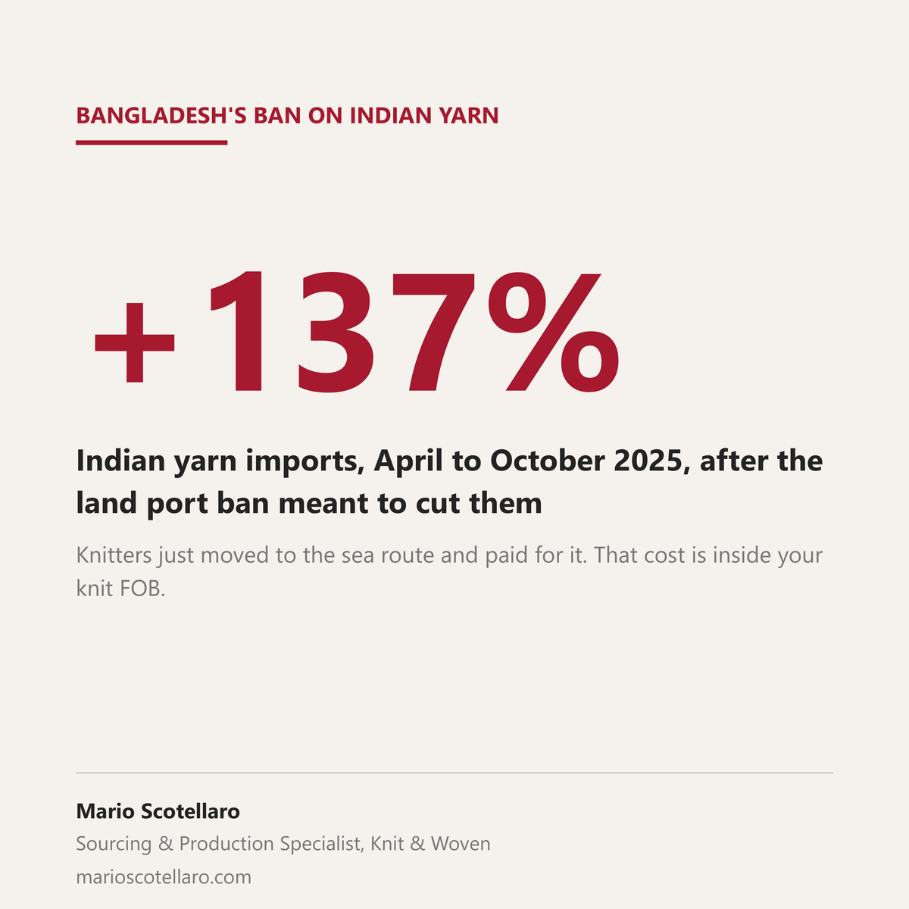

In April 2025 Bangladesh stopped yarn imports from India through its land ports, to protect local spinners from cheaper Indian yarn coming across the border.
It did not slow the trade. Yarn imports from India roughly doubled over the last fiscal year, to about 30,000 crore taka from 14,000 crore, on the textile millers' association's own count (The Daily Star, 31 August 2026). In the first six months of the ban they were already up 137 percent year on year (The Daily Star, 28 December 2025). Knitters did not stop buying. They moved the same yarn onto the sea route, paid more freight and added roughly two weeks of lead time, because local yarn still does not compete on price. The spinning mills are sitting on 120 billion taka of unsold stock anyway, and nearly 50 have shut.
Now Dhaka and Delhi are talking about dropping the rule (Textiles Resources, 27 August 2026).
Here is the part that matters if you buy knit from Bangladesh. That extra freight and that lost time have been sitting inside your FOB price for more than a year, and most likely nobody pointed it out. The lesson is not this one rule. It is that a real slice of your landed cost on Bangladeshi knit is decided by trade policy upstream of the factory, and someone should be tracking it for you.
That is what a buying office on the ground is for.
Sources: The Daily Star, 28 December 2025 · The Daily Star, 31 August 2026 · Textiles Resources, 27 August 2026